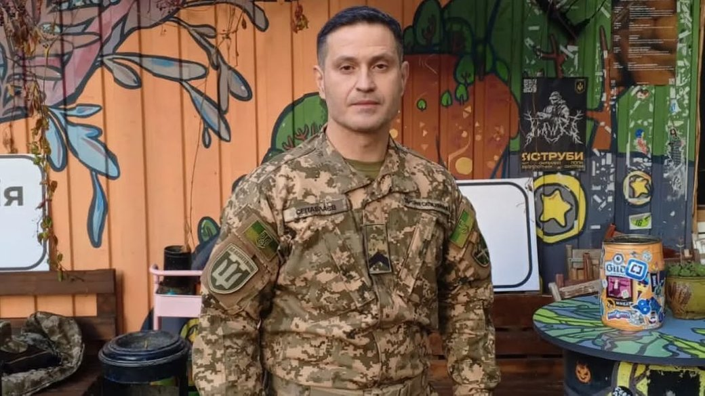
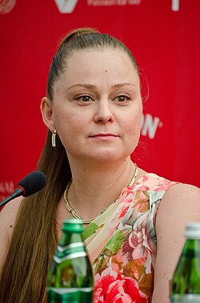

Актори та театральні діячі
Ахтем Сеітаблаєв
Ахтем Сеітаблаєв підтримує Збройні сили України не лише волонтерством, а й безпосередньою службою в їхніх лавах.
Основні напрями діяльності:
- Військова служба: Наразі Ахтем Сеітаблаєв служить в управлінні комунікацій штабу Командування Сил ТрО ЗСУ. Раніше він був пресофіцером 206-го батальйону.
- Інформаційний фронт: У складі ТРО Медіа режисер створює документальні проєкти про війну (наприклад, фільм «Дух Переможців»).
- Підтримка ветеранів: Є художнім керівником «Театру Ветеранів». У квітні 2026 року відбулася презентація вистави «Енеїда», де ролі виконували ветерани на протезах.

Олексій Горбунов
Олексій Горбунов — відомий український актор театру і кіно, Народний артист України.
Основні напрями діяльності:
- Акторська гра в кіно та театрі, а також музична творчість.
- Інформаційний фронт: Відкрито підтримує Україну, висловлює свою позицію в інтерв’ю. Після 2014 року відмовився від роботи в Росії.
- Театральна діяльність: Зіграв у великій кількості фільмів і серіалів, закріпивши образ харизматичного актора.
- Благодійні заходи: Активно підтримує ветеранів і військових, проводить благодійні концерти та передає кошти на потреби армії.

Ірма Вітовська
Ірма Вітовська — українська акторка театру і кіно, продюсерка, телеведуча та громадська діячка.
Основні напрями діяльності:
- Робота в театрі та кіно, створення культурних проєктів, робота на телебаченні.
- Інформаційний фронт: Активно використовує свою публічність для підтримки України, виступає проти російської пропаганди, підтримує українську мову.
- Благодійні заходи: Організовує та підтримує збори коштів для військових, допомагає пораненим і ветеранам, передає власні гонорари на допомогу.

Наталка Денисенко
Наталка Денисенко - українська акторка театру та кіно, яка активно підтримує Україну під час війни.
Основні напрями діяльності:
- Волонтерство та допомога ЗСУ: Бере участь у благодійних зборах, донатить на потреби військових.
- Інформаційний фронт: Активно веде соціальні мережі, висвітлює події війни, підтримує бойовий дух українців.
- Благодійні заходи: Бере участь у концертах та аукціонах на підтримку Збройних сил України.
- Підтримка морального духу: Своєю творчістю популяризує українську культуру та надихає людей.

Дмитро Ступка
Дмитро Ступка — український актор, чия позиція викликає суперечки у суспільстві через його публічні висловлювання.
Основні напрями діяльності:
- Театральна діяльність: Працював у театрі імені Івана Франка, де виконував ролі у виставах.
- Кінематограф: Відомий ролями у стрічках «Століття Якова», «Правило бою» та інших.
- Інтерв’ю та публічні висловлювання: Привертав увагу своїми заявами щодо суспільних тем, зокрема мобілізації, що викликало резонанс.

Віталіна Біблів
Віталіна Біблів — українська акторка театру й кіно, відома своєю щирою грою та участю в популярних українських проєктах.
Основні напрями діяльності:
- Підтримка ЗСУ: Бере участь у благодійних заходах та аукціонах на допомогу українським військовим.
- Інформаційний фронт: Активно висвітлює події війни у соціальних мережах.
- Культурний спротив: Через участь у театральних постановках і зйомках підтримує українську культуру.
- Волонтерська діяльність: Долучається до ініціатив зі збору гуманітарної допомоги.
